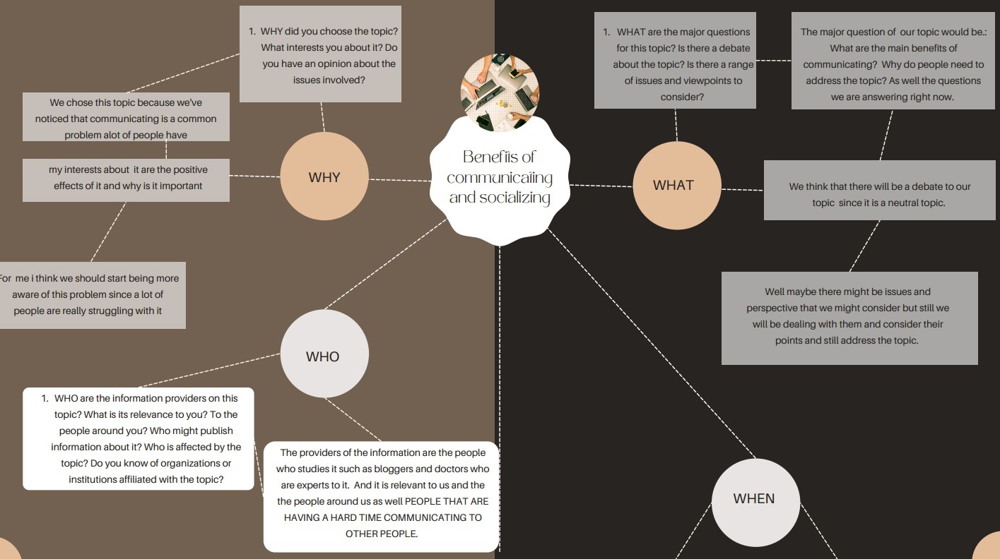
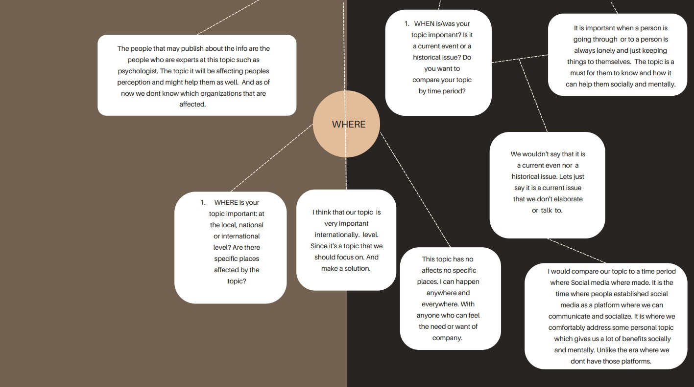
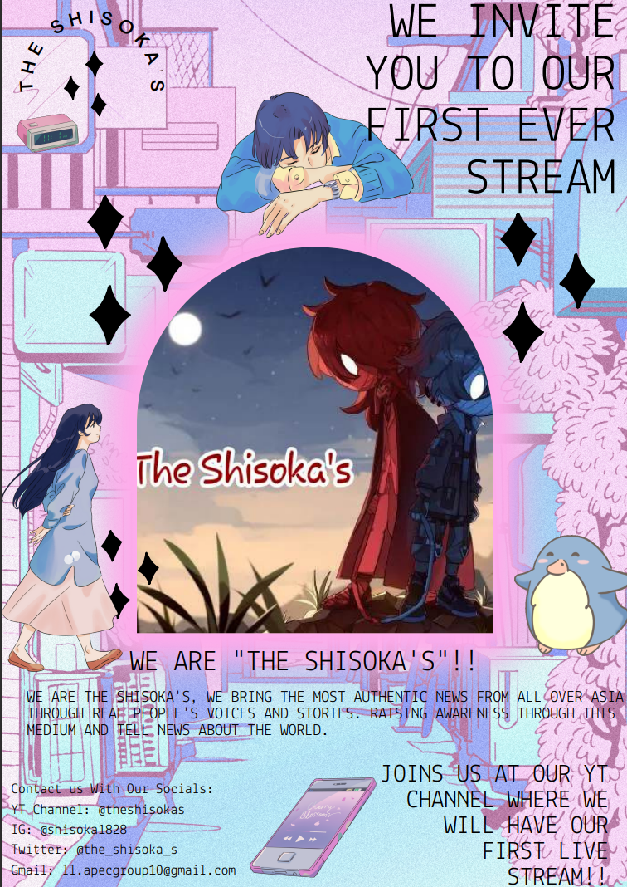
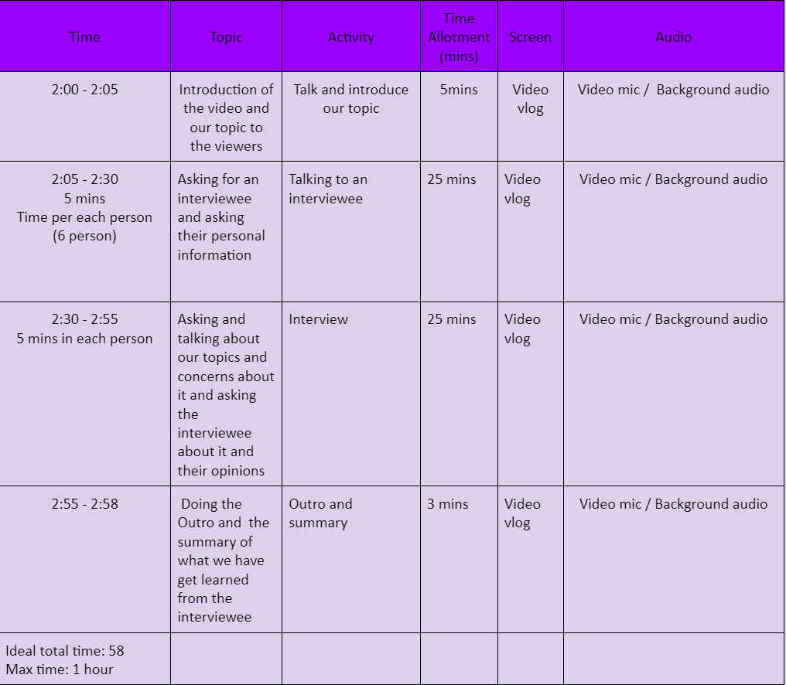

Subscribe to our YouTube Channel to be updated when we post more content!
Our Content
"What are the advantages of social skills & the current social issues we are facing?".
Knowing how to socialize is one of the most important aspects that we need to learn for our daily lives. It is what we need in order to have an understanding with people. Communication is the key to give and receive knowledge. It helps us connect with other people by expressing our feelings and thoughts. It allows us to build better relationships with people.
Quarter 1


Our Definition of stream
Our team's definition of streaming is a Multimedia file such as audio and videos that can be watched on different platforms for streaming. Watching a stream is very easy and convenient because you don't need to download. Having a great device and an internet connection you can watch it through a platform, recorded or live stream. Our viewers analysis for each streaming category is that, our viewers want us to make a vlog on youtube with our topic as they find it easy to access and to watch.
The need of viewers
Knowledge, as we make a vlog about our study on the benefits of communicating and socializing. It'll help them know what it's like to live with social skill issues and the advantages and disadvantages of communicating through a series of videos. We want to raise awareness for this particular topic and give knowledge to the viewers.
Characteristics of a good stream
Having a good video and audio quality for viewers to watch and enjoy, entertaining yet knowledgeable at the same time attracting viewers because of it is relatable and relevant for everyone.
Quarter 2
Five Why's
Why 1: Why are people having a hard time communicating/socializing?
- because it is hard for them to talk and open up with people.
Why 2: Why is it hard for them to talk to people?
- because they are not sure how they are going to talk it out.
Why 3: Why do you think they're not sure about it?
- because they feel shy, unconfident and awkward so they can't talk to people.
Why 4: Why do you think they are shy or unconfident?
- because they have social skill issues.
Why 5:Why do you think they have social skill issues?
- because they don't talk much to people and they're always lonely that way they don't know how to socialize anymore.
Our Events
The Shisoka's Invitation Poster

Streaming Outline

Streaming Layout
About Us
We are the Shisoka's, we bring the most authentic news from all over Asia through real people's voices and stories and raising awareness through this medium. We are still a small media startup and are constantly challenging ourselves to expand our coverage. In the process, we hope to empower you, to stay curious, think critically, and take action to bring the world closer, for we are all in this together.
Our Team, “The Shisoka” created this website to share to the people what streaming is all about. Our team's mission is to help with research and give knowledge to everyone about streaming and the social issues that our team will focus on. We hope that you will enjoy your journey in our website.